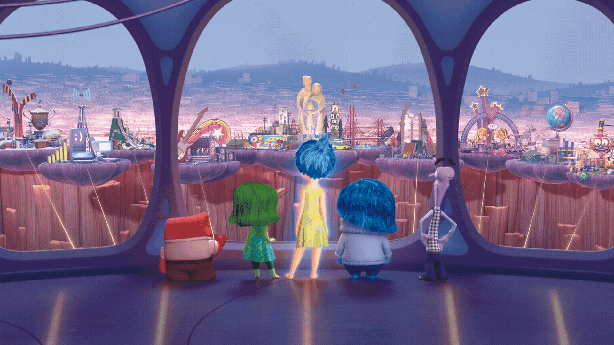

Global magic.
Local meaning.
Disney's Asia Localization Experience
Disney's Expansion into Southeast Asia
Explore the story
delivered during the internship
culturally relevant experiences
of Avengers history celebrated
Description ✍️
A little behind the magic.
In January 2023, I joined Disney as a Product Design Intern. Working with an incredibly talented group of cast members, I was able to grow both as a designer and as a person in ways I never imagined. The experience profoundly impacted my workflow and deepened my understanding of Product Design.
Interns @Disney Asia
Welcome to Disney
Project Presentation
MY CONTRIBUTIONS 🏆
Consistency, with room for culture.
I delivered a total of 6 projects, and the below projects are published. While other Disney projects are strictly under NDA, please feel free to let me know if you'd like to take a look!
Designed physical product packaging and ensured all visuals followed Disney’s global brand guidelines across product lines.
Website design
UI Design
Design systems
+more
Localized global design systems to align with culturally relevant experiences across Southeast Asian markets.
Product design
3D design
Industrial design
+more
Developed scalable design tokens and visual guidelines to unify branding across fashion and merchandise platforms.
Brand guideline
Texture design
Fashion design
+more
WHERE ARE MY PROJECTS? 🔐
A glimpse of the published work.
I delivered a total of 6 projects, and the below projects are published. My other projects at Disney projects are under NDA. Please feel free to contact me if you'd like more information.
DISNEY EXPERIENCES
Marvel UI Interactive Stickers
Animated Marvel stickers were created to celebrate 60 years of Avengers history. Designed to elevate fan engagement, these visuals brought Marvel’s legacy into everyday conversations across digital platforms.
FINAL PRODUCTS 🖥️
Disney Experience @Singapore
The challenge was clear: make global magic feel local. The result? A digital world that felt both unmistakably Disney and uniquely Singaporean. Users were invited into a space that was at once globally iconic and deeply familiar.